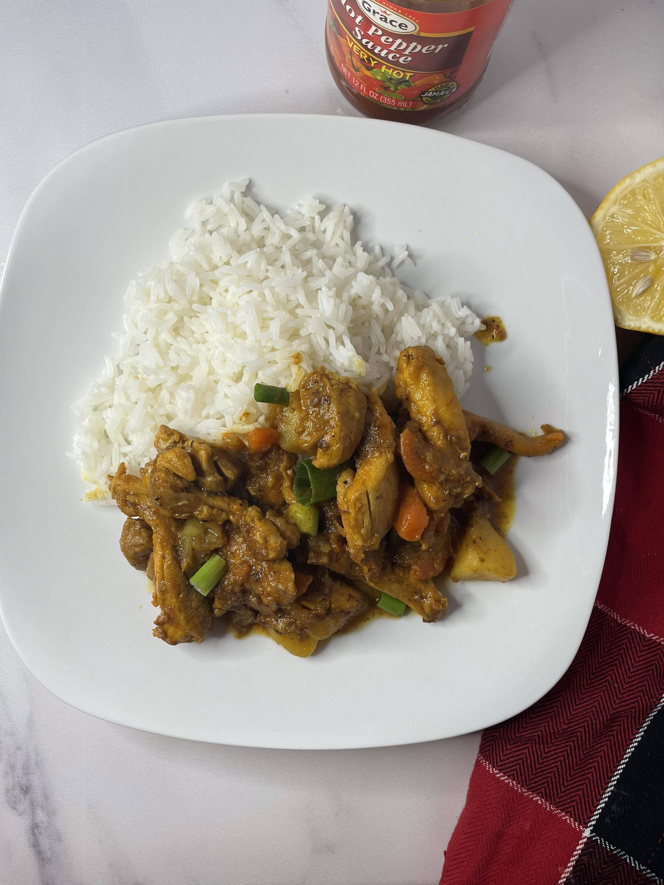

Curry Chicken

Boneless Jamaican Curry Chicken
Traditional Jamaican Curry Chicken with a twist.
Ingredients
- 4 Boneless, Skinless Chicken Thighs
- 2 Teaspoon Jamaican Curry Powder, for Seasoning
- 2 Teaspoons Curry Powder, for Cooking
- ½ Teaspoon Smoked Paprika
- 1 Teaspoon Pink Himalayan Salt
- ½ Teaspoon Black Pepper
- ½ Scotch Bonnet Pepper
- 2 Small Potatoes, Diced
- 1 Medium Carrot, Peeled and Sliced
- 6 Pimento Balls
- 3 Garlic Cloves, Minced
- 1 Small Onion, Peeled and Slices
- 2 Tablespoon Vegetable Oil
- ½ Lemon or Lime
- 1 Cup Water, For Cooking
- Water, for Cleaning
Steps:
- Start by cutting any excess fat from chicken thighs and cut into ½ inch strips.
- Equipment Needed: A sharp knife and a cutting board.
- Clean chicken by adding cut chicken to a bowl and squeezing the juice of half of a lemon and cover with water.
- Drain and wash with clean water before draining.
- The Chicken Thighs should have a slight smell of citrus; Drain any excess water to ensure seasonings will stick to the chicken.
- Season chicken by adding ½ teaspoon of curry powder, paprika, black pepper, salt, sliced onions and scotch bonnet. Using a large spoon, or a gloved hand, massage the spices into the chicken then allow to sit and marinate at room temperature until ready to cook.
- Using a large and thick skillet, heat vegetable oil on medium heat. Once heated, add the 2nd ½ tablespoons of curry powder and minced garlic. Cook for about 30 seconds to a minute until curry slightly changes in color and fragrant.
- Once curry becomes slightly caramelized, begin adding chicken pieces. Ensure each chicken piece is flat so allow an even cook and color. Cook for about 2-3 minutes on each side.
- Once flipped, add potatoes, onions, carrots, thyme and stir until vegetables are coated in spices. Add 1 Cup of water and stir. Cover and cook on medium heat until potatoes are soft and tender, about 15 minutes. Stir occasionally to keep an eye on the pot.
- The potatoes will aid in creating a thick sauce, you may mash some potatoes to create a thicker sauce.